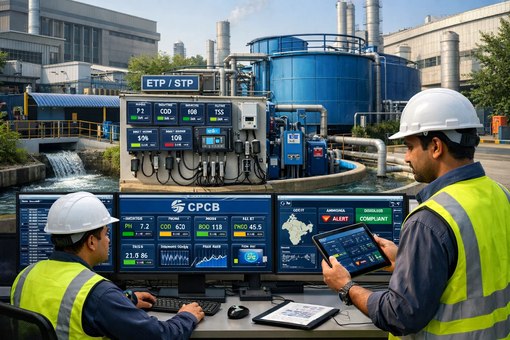

Water Quality Monitoring for Manufacturing Units in Noida

Noida has become a major manufacturing hub in North India, housing engineering, automobile, electronics, textile, chemical, pharmaceutical, and FMCG manufacturing units.
With increasing industrial wastewater generation and strict enforcement by regulatory authorities, water quality monitoring is now a critical requirement for manufacturing units in Noida.
This blog explains why monitoring is essential, applicable regulations, key parameters, common challenges, and how Agua Instruments provides reliable, compliance-ready monitoring solutions.
Why Manufacturing Units in Noida Need Water Quality Monitoring
Manufacturing processes generate wastewater containing:
- Chemicals and solvents
- Oils and greases
- Suspended solids
- Organic and inorganic pollutants
If untreated or poorly monitored, this effluent can contaminate groundwater, drains, and nearby water bodies, leading to regulatory violations and environmental damage. To prevent this, authorities mandate continuous monitoring and strict effluent control.
Regulatory Framework: CPCB & UPPCB
Manufacturing units in Noida must comply with:
- Central Pollution Control Board (CPCB) standards
- Uttar Pradesh Pollution Control Board (UPPCB) consent conditions
Many manufacturing industries fall under Red or Orange categories, making them subject to:
- Installation of Online Continuous Effluent Monitoring Systems (OCEMS)
- Real-time data reporting to CPCB & UPPCB servers
- Regular inspections and audits
What Is a Water Quality Monitoring System?
A water quality monitoring system continuously measures wastewater parameters using online analyzers and industrial sensors installed at:
- ETP outlets
- STP discharge points
- Final effluent discharge lines
The system automatically logs and transmits data to regulatory servers, ensuring 24×7 compliance and transparency.
Key Parameters Monitored for Manufacturing Units
- pH – acidity/alkalinity control
- COD – organic load
- BOD – biodegradability
- TSS – solids content
- Flow – discharge quantity
- Conductivity – dissolved salts
- Oil & Grease – mechanical and process contamination
- Ammonical Nitrogen – nutrient pollution
Accurate monitoring of these parameters is essential for compliance and process optimization.
Challenges Faced by Manufacturing Units in Noida
- Highly variable effluent quality
- High pollutant loads
- Sensor fouling in harsh wastewater
- Power and connectivity issues
- Frequent UPPCB inspections
These challenges demand robust, industrial-grade monitoring systems and expert support.
Agua Instruments’ Monitoring Solutions for Manufacturing Units
- Online COD & BOD analyzers
- pH, TSS, Flow & Conductivity sensors
- Multi-parameter water quality analyzers
- Secure IoT / GPRS data loggers
- Online gas analyzers for emission monitoring
All systems are designed for continuous operation in demanding industrial environments.
Why Manufacturing Units Choose Agua Instruments
- Proven compliance with CPCB & UPPCB norms
- High-accuracy, low-maintenance analyzers
- Reliable real-time data transmission
- End-to-end installation and commissioning
- Calibration, maintenance, and local service support
Benefits of Real-Time Water Quality Monitoring
- Continuous Compliance with OCEMS and consent conditions
- Improved ETP Performance and reduced operating costs
- Reduced Risk of Penalties and shutdowns
- Inspection Readiness with tamper-proof data
- Sustainable Manufacturing aligned with ESG goals
Typical Installation Points in Manufacturing Units
- ETP final outlet
- Treated water reuse lines
- Discharge to drain or CETP
- Internal monitoring points for process optimization
Correct placement ensures accurate and representative monitoring.
Conclusion
For manufacturing units in Noida, water quality monitoring is not just a regulatory requirement—it is a business necessity. With strict CPCB and UPPCB enforcement, real-time monitoring ensures compliance, operational efficiency, and environmental protection.
Agua Instruments — Water Quality Monitoring Solutions for Manufacturing Units in Noida.